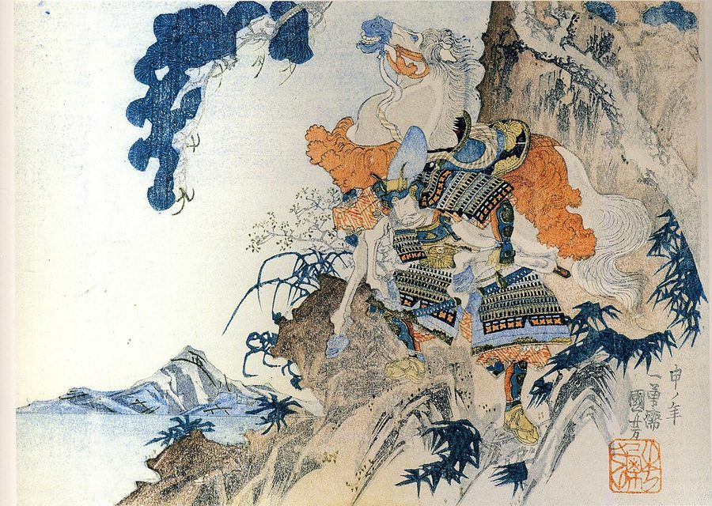

B2 · Culture & Traditions
Soma Nomaoi
A thousand-year-old cavalry festival in Fukushima, and what it now means to the people who ride in it.
Reading
Play the audio and follow along, then read it again on your own. Tap or hover over a highlighted word to see what it means.
Soma Nomaoi is held each year in the Soma region of Fukushima Prefecture, on the northeastern coast of Japan. It is designated a National Important Intangible Folk Cultural Property, and it is frequently described as one of the great horse festivals anywhere in the world. Around four hundred riders take part, in full traditional armor, on horses carrying the banners of their districts.
Its origins are usually traced back more than a thousand years, to the Heian period. The story attaches it to Taira no Masakado, a warlord and an ancestor of the Soma clan, who is said to have released wild horses across open ground so that his cavalry could practice pursuing them as though they were enemy troops. When the exercise ended, the horses that had been caught were offered to Shinto deities. Military training and religious observance were bound together from the beginning, and the festival has kept both.
What survives today is a reenactment on a large scale. Hundreds of participants ride in armor that has in many cases been in the same family for generations, and descendants of the Soma clan still take the ceremonial roles, including that of commander-in-chief. The festival runs over three days at the end of May, across the Hibarigahara festival grounds and a number of local shrines.

The first day belongs to the processions. Riders assemble in their districts and set out with portable shrines and their commanders, and the local parades bring the armor out into ordinary streets before anything competitive begins.
The second day is the main one. It opens with a full parade of armored riders and continues into Kachu Keiba, the armored horse race — which is exactly what it sounds like, and considerably harder than an ordinary race, since the riders are carrying the weight of a complete set of armor. The event most people come for is the Shinki Sodatsusen, the sacred flag competition. Flags are launched into the air by fireworks, and the riders compete to catch them as they fall. It is fast, genuinely chaotic, and the closest thing the festival has to a spectacle in the modern sense.
The third day is quieter and more ritual. At Soma Odaka Shrine, participants dressed in white take part in Nomakake, the wild horse chase, in which a horse is pursued and symbolically captured as an offering — the oldest element of the whole festival, and the one closest to what Masakado's men are supposed to have done. The festival closes with the sounding of conch shells.
None of this is without risk. These are real horses ridden at speed by riders in heavy armor, in front of crowds, and injuries to riders and occasionally to spectators do happen when a horse bolts. The organizers manage the risk rather than eliminate it, which is the honest position for an event of this kind.
The festival's modern significance is harder to separate from where it takes place. The Soma region lies on the coast that was struck by the earthquake and tsunami of March 2011, and by the nuclear accident that followed. Communities were evacuated, some for years. Holding the festival at all in the years immediately afterward required horses, armor, grounds and people who had all been displaced, and in some cases lost. That it continued, and that families who had left still returned to ride, is why participants tend to talk about it now in terms of continuity rather than pageantry. It is a thousand-year-old ritual that has become, without anyone planning it, a demonstration that the community still exists.
Key Vocabulary
- prefecture one of the administrative regions Japan is divided into
- banner a long flag carried as the sign of a group
- to trace back to follow the history of something to its origin
- warlord a military leader holding power over a territory
- cavalry soldiers who fight on horseback
- deity a god
- reenactment a performance that recreates a historical event
- to bolt to run away suddenly and uncontrollably, said of a horse
- to displace to force people to leave their homes
- pageantry elaborate display staged for its own sake
- to be struck by to be hit by a disaster
- to bind together to join two things so they cannot easily be separated
Soma Nomaoi — B2 · Culture & Traditions · Renan the Teacher, English Language Academy · https://renangrossi.github.io/englishclasses/reading/b2/soma-nomaoi.html
Interactive Exercises
Practice
Complete each exercise, then click Submit to see your score and an explanation for every answer.
Speaking & Writing
Discussion
There are no right answers here — use these to practice speaking, or write a short answer to each.
- The festival began as military training and is now a reenactment. Does a tradition lose something when its original purpose disappears?
- Organizers “manage the risk rather than eliminate it”. Where should the line be drawn for a traditional event that is genuinely dangerous?
- After 2011 the festival came to mean something it had not meant before. Can a community choose what its traditions mean, or does that happen to them?
- Is there an event where you live that would be missed most if it stopped? What would its absence actually signal?
- Write about 150 words describing a tradition from your own country to someone who has never heard of it — including what it costs the people who keep it going.